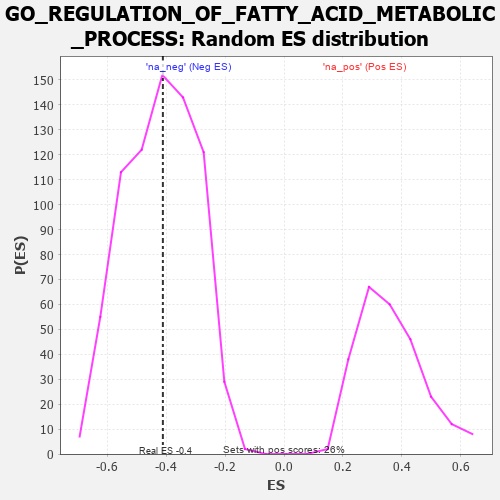

| | | Dataset | 7d |
| Phenotype | NoPhenotypeAvailable |
| Upregulated in class | na_neg |
| GeneSet | GO_REGULATION_OF_FATTY_ACID_METABOLIC_PROCESS |
| Enrichment Score (ES) | -0.4116406 |
| Normalized Enrichment Score (NES) | -0.9826464 |
| Nominal p-value | 0.5067204 |
| FDR q-value | 0.8926903 |
| FWER p-Value | 1.0 |
Table: GSEA Results Summary
 Fig 1: Enrichment plot: GO_REGULATION_OF_FATTY_ACID_METABOLIC_PROCESS
Fig 1: Enrichment plot: GO_REGULATION_OF_FATTY_ACID_METABOLIC_PROCESS
Profile of the Running ES Score & Positions of GeneSet Members on the Rank Ordered List
| PROBE | GENE SYMBOL | GENE_TITLE | RANK IN GENE LIST | RANK METRIC SCORE | RUNNING ES | CORE ENRICHMENT | | 1 | IRS1 | | | 98 | 1.659 | 0.1901 | No |
| 2 | AKT1 | | | 1040 | 0.476 | 0.1299 | No |
| 3 | WDTC1 | | | 2865 | 0.172 | -0.0784 | No |
| 4 | ABCD1 | | | 3677 | 0.047 | -0.1746 | No |
| 5 | NCOR1 | | | 3961 | 0.000 | -0.2101 | No |
| 6 | PDP2 | | | 4098 | -0.023 | -0.2243 | No |
| 7 | MTOR | | | 4114 | -0.025 | -0.2232 | No |
| 8 | ACADL | | | 4360 | -0.069 | -0.2455 | No |
| 9 | CPT1A | | | 5467 | -0.311 | -0.3465 | No |
| 10 | SCAP | | | 5986 | -0.466 | -0.3548 | Yes |
| 11 | RGN | | | 6233 | -0.547 | -0.3189 | Yes |
| 12 | PLIN5 | | | 6524 | -0.672 | -0.2734 | Yes |
| 13 | GHSR | | | 6937 | -0.894 | -0.2160 | Yes |
| 14 | PIBF1 | | | 7049 | -0.966 | -0.1120 | Yes |
| 15 | PANK2 | | | 7736 | -1.866 | 0.0295 | Yes |
Table: GSEA details [plain text format]

Fig 2: GO_REGULATION_OF_FATTY_ACID_METABOLIC_PROCESS: Random ES distribution
Gene set null distribution of ES for GO_REGULATION_OF_FATTY_ACID_METABOLIC_PROCESS